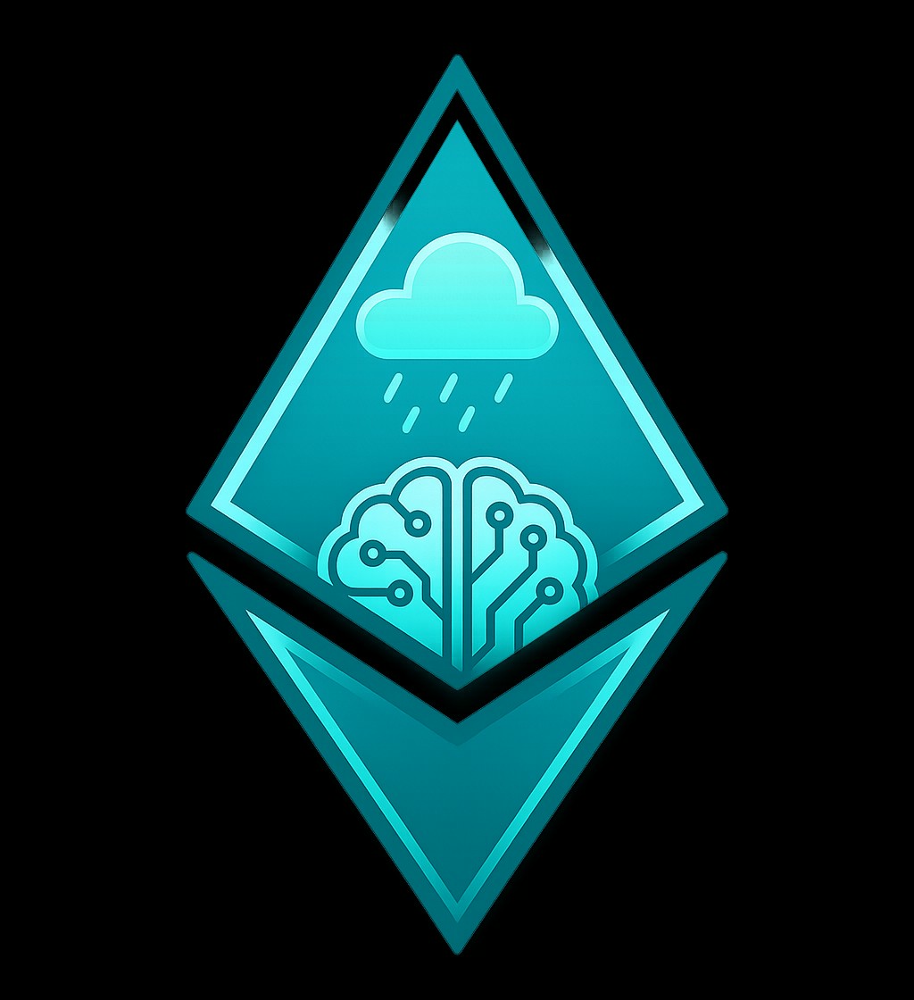

EtherForecastResearch betaEvidence-first Ethereum forecast
The current system still publishes six research windows and preserves every issued record, but the frozen audit did not validate the Center or Distribution heads as superior forecasts. HAR-RV volatility passed the historical QLIKE gate from 6 hours through 30 days, so this homepage leads with the part that has demonstrated signal.
The volatility number below is a 1σ movement scale, not a price target and not a calibrated 80% price interval. Current publication status and input-continuity research are shown separately from predictive skill.
Live system status
A green workflow is not the same as predictive accuracy. This panel checks the current six-horizon public release and the separate input-continuity research state without promoting fallback records into the public forecast.
Loading the current publication.
Loading the received-input research status.
Center remains 0 / 6 PASS under the frozen historical gate. A no-change fallback is shadow-only and is not shown as a promoted price forecast.
Historical service gaps remain in the audit trail and are never backfilled as if they were real-time publications.
Current volatility outlook
Expected volatility scale.
Frozen 2026-09-17 backtest
QLIKE improvement vs persistence: +9.8% to +16.8% depending on horizon.
MAE skill vs no-change ranged from +0.46% to −4.18%, below the frozen gate.
The intended 80% range failed the combined WIS/coverage/width/paired criteria.
| Window | Historical QLIKE improvement | Variance gate | Prospective non-overlap | Review minimum | Status |
|---|
Experimental · 6 hours only
The 6h Event head passed the historical gate (+4.89% Brier skill, ECE 0.0289). Longer horizons failed and are intentionally not shown here. This 6h signal is still prospective research, not a promoted trading signal.
Why the site changed
Removed as a headline prediction because the Center head failed all six frozen gates.
Removed as a current predictive claim because Distribution failed all six horizons.
Nothing was erased from the audit trail. The original forecasts, ranges, probabilities and realized outcomes remain available in the legacy research/audit page for reproducibility.
Center and Event were evaluated on the immutable monthly-refit historical replay with 2,107–2,642 out-of-fold origins depending on horizon. Variance and Distribution used the preregistered 2024/2025/2026 R2 folds. ETF, supply/staking, liquidation and derivative collectors remain governed research inputs unless their own timing, rights, continuity and incremental-signal gates pass.
Historical improvement does not authorize production promotion. Minimum prospective non-overlap counts are 120 / 60 / 40 / 26 / 18 / 12 for 6h / 1d / 3d / 7d / 14d / 30d. The received-input availability fallback is a separate Center-only no-change shadow; it is not public delivery and is not counted as predictive skill.